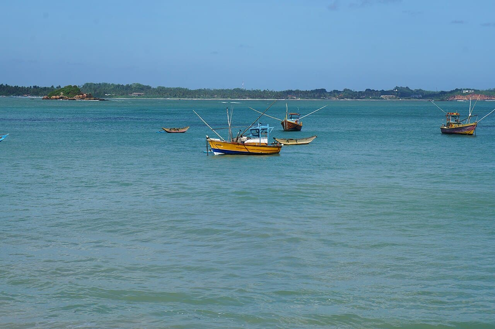

Weligama
Sri Lanka · surf, bodyboard, baignade, paddle

Une baie sablonneuse peu profonde où la mousse déroule doucement sur des centaines de mètres. Le spot d'apprentissage de la côte sud.
- Lieu
- Sri Lanka
- Niveau
- Débutant
- Activités
- surf, bodyboard, baignade, paddle
- Type d'eau
- Mer / océan
- Coordonnées
- 5.97, 80.43 (position approximative du secteur)
Dangers à connaître
- Beaucoup d'écoles de surf au même endroit.
- Quelques rochers isolés côté est de la baie.
Le conseil d'Ocean Buddy
Reste sur la moitié ouest de la baie : le fond y est propre et régulier.
Ouvrir dans Ocean Buddy Télécharger sur l'App Store
Source : Description historique Ocean Buddy · vérification externe en attente.